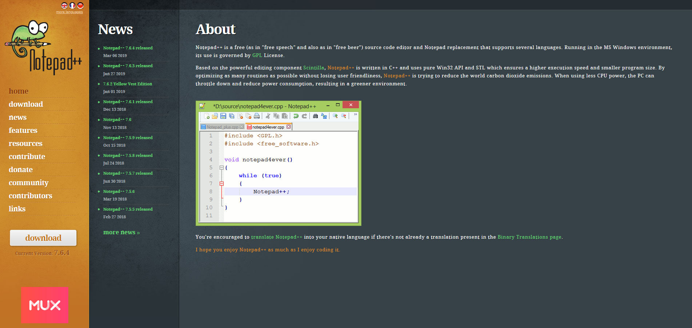
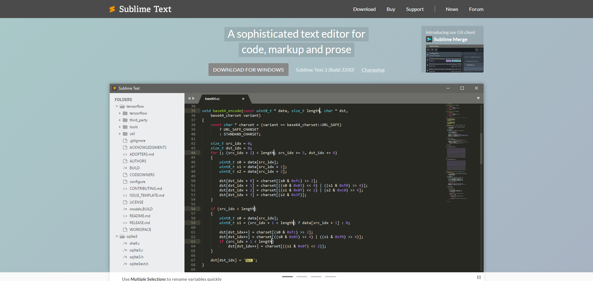
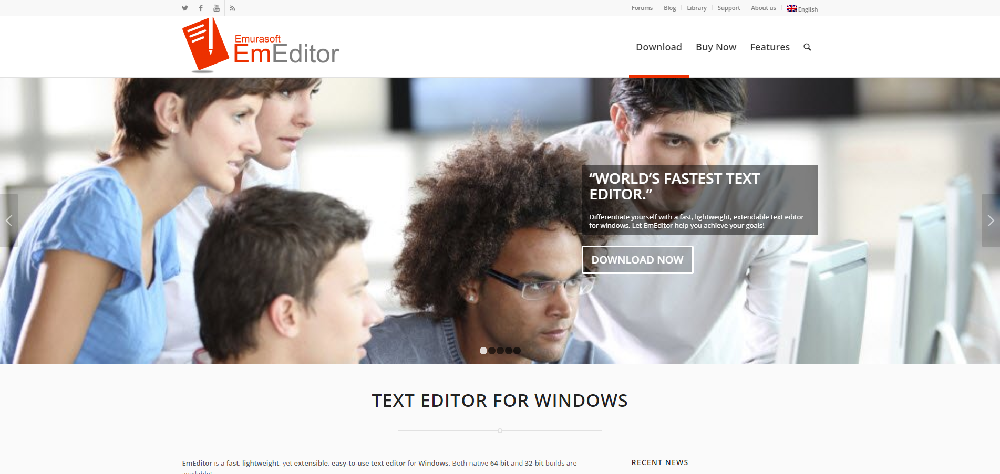
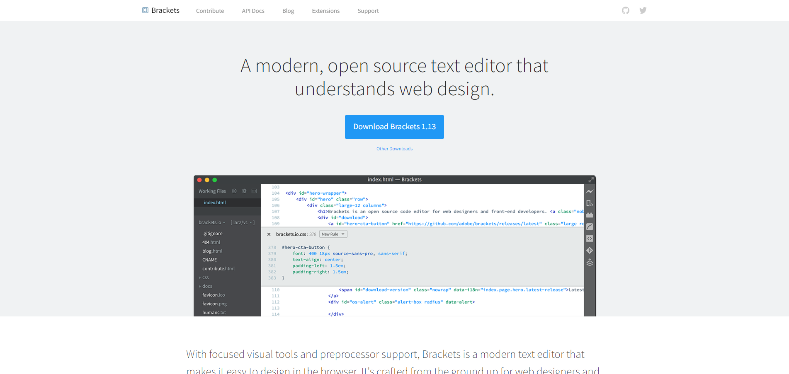
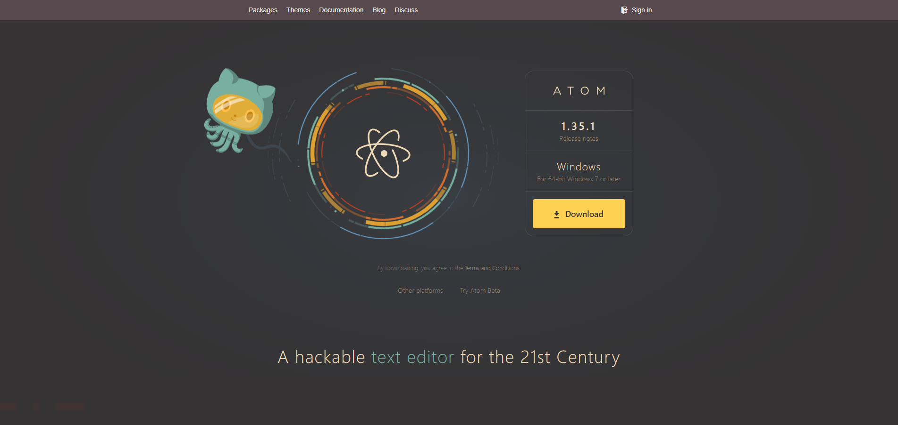

Text is the building block of the words people read in blogs, stories, and all other types of written content. However,the text visible on internet and digital platforms is not that simple in its origin. In fact, it undergoes intensive editing before final publication, and the editing is not simple either. It is technical in nature, but the good thing is that there are text editors to get things done. They are used by programmers, developers, and content creators, helping them provide a proper format to the written content. So here are the top five text editors for Windows that do an excellent job of modifying the text files.
1. Notepad++
(Photo : Notepad ++)
A free source code editor for Windows, Notepad++ was developed by Don Ho in 2003, and even after 15 years, it continues to be the most credible text editor for developers and programmers. It has been rated as the "most popular text editor" and "most used text editor" by Lifehacker and Stack Overflow, respectively. It is simple and lightweight and thus a great editing tool for all those who want to keep things clutter-free and yet create commendable work. To edit the file, all one has to do is right-click the file and choose Edit with Notepad++ from the context menu.
The editor features syntax highlighting, code folding, and limited auto-completion for programming, scripting, and markup languages. A replacement for Notepad, it supports several programming languages and is based on Scintilla — the powerful editor component. It uses pure Win32 API and STL, which translates into faster execution speed and smaller program size, something programmers always look forward to in a text editor. Besides being user friendly and lightweight, it also offers several advantages to the user.
It automatically restores recently opened and unsaved files, which means one can edit without any worry because if one forgets to save, it will be done by Notepad++ every time, without fail. It also auto-completes words as one edits, saving time and effort as a result. The best part is the WYSIWYG (what you see is what you get), which means the edited text will appear the same in the editor as it will when printed or published.
Notepad++ is quite flexible and supports macros and multiple plugins, courtesy of the strong plugin architecture. As of now, more than 140 compatible plugins are available for the Windows text editor, including the 10, which are included by default in the program. The editor is widely used and has a huge user base spread in different parts of the world because it supports 84 languages. It offers internationalization through XML files in an application specific format, which contains all internationalized strings in a specific language. This file can be reloaded from application settings, and one can translate the text to new languages by just editing an existing file. It can save text documents in a huge variety of formats such as TXT, CSS, ASM, AU3, BASH, BAT, HPP, CC, DIFF, HTML, REG, HEX, JAVA, SQL, VBS, and more.
Notepad++ has kept pace with the evolving technical developments as well as the changing environment. The latest version 7.6.4 was launched only this month, and the developers are constantly trying to optimize as many routines as possible to reduce carbon footprints. Suited for beginners as well as pros, Notepad++ is really the best text editor for Windows environment that brings best results in editing.
2. Sublime Text
(Photo : Sublime Text)
A sophisticated and lightweight text editor for Windows, Sublime Text was developed by Jon Skinner and Will Bond in 2008 and has been a top selling editor for eleven years. It is written in C++ and Python and comes packed with a host of editing tools that make editing super simple and fun. The cross-platform source code editor offers Goto Anything feature, which enables quick navigation to files, symbols, or lines.
The simultaneous editing allows execution of the same change at multiple places. The syntax highlighting and high-contrast display lower the eyestrain, while auto-complete completes entries as the user types, which speeds up editing.
The keyboard shortcuts further pace up the editing. Sublime Text provides 23 different visual themes and a number of screen modes where one can view maximum of four files or select the full screen mode as one wishes. Customizable to the core (through the JSON settings files), Sublime Text is compatible with plugins and lets the user import tools for better editing. With the latest version release dating a few days back, this editor is advanced from every angle. Fit for newbies as well as nerds, Sublime Text is the right editing tool for smooth and fast editing.
3. EmEditor
(Photo : EmEditor)
EmEditor was developed by Yutaka Emura (a member of Association of Software Professionals) at Emurasoft and comes forward as a fast and lightning-fast text editor that makes editing as easy as it can get.
It can open and edit large files (up to 248 GB or 2.1 billion lines) in record time and also edit CSV files such as Excel with simple drag and drop. A pro at editing big data and files, it is also an expert at foreign languages. It is the pioneer editor for Japanese and Chinese languages.
It supports Unicode and many other international encodings. Its exclusive Filter feature allows one to view only those lines that match specific terms. The keyboard shortcuts edit things in no time, and the AutoFill and Flash Fill further reduce the time by filling the same value as the selected cell in other cells.
Fully flexible, it easily aligns with plugins, and the customizable interface lets one tweak the dashboard so that it tunes in with one's individual work requirements. It offers all the standard editing features such as split screen, tabbed design, portable version, and more to make text editing enjoyable and more efficient. Fast emerging as one of the sought-after editors, EmEditor is an excellent option for modern-day text editing needs. Although the Professional version of EmEditor is a best paid tool for many developers or data analysits, you can try the free version of EmEditor if you just want to edit files casually.
4. Brackets
(Photo : Brackets)
Brackets is a simple yet robust cross-platform text editor that was launched in 2014 by Adobe Systems and has been gaining popularity at a super-fast pace. It has been written in HTML, CSS, and JavaScript. It comes with an army of features to edit in the most engaging atmosphere. Adaptable in every respect, it allows a developer to alter features and personalize it for one's own needs.
The quick edit lets one delete and add in seconds, and the live preview pushes edited codes, helping one go back and forth between the source code and browser to view the changes in real time. The strong extension framework makes it super easy to install extensions through the Extension Manager. It supports more than 38 types of files including but not limited to C++, C, VBScript to Java, JavaScript, HTML, Python, Perl and Ruby.
The split view, keyboard shortcuts, customizable interface, and the like make editing fast and fun. Tailor-made for web developers and front-end developers, Brackets is a modern text editor that will make one fall in love with editing and coding. Up-to-date, efficient, and easygoing, it is a performer par excellence and thus a must-have for text editors.
5. Atom
(Photo : Atom)
Developed by GitHub, Atom was launched in 2014. It is a free, open-source text and code editor whose USP is its ability to host additional features. It offers thousands of packages to the users, letting them decide and pick what works for them. The best part is that packages install easily by just typing the specific command. Moving on, the customizable interface gives ample scope for personalization where one can change looks, fonts and more.
The editor works out of the box, and the shortcuts edit text faster. One can switch between tabs and the drag-and-drop file/folder support makes editing even quicker, irrespective of the user's expertise. The split panes, tree view, search and replace features that are in-built in the editor let one switch from one file to another in seconds.
The changes are executed simultaneously at selected places, and thus, one saves on time and effort. Atom is also compatible with scores of programming languages that include C C++, HTML, Java, JavaScript, JSON, PHP, and many more. The icing on the cake is the GitHub team that is always ready with 24/7 support. A hackable text editor for the 21st century by its own admission, Atom is perfect for first-timers as well as veteran programmers for text editors.
© 2020 TECH TIMES, ALL RIGHTS RESERVED. DO NOT REPRODUCE WITHOUT PERMISSION.